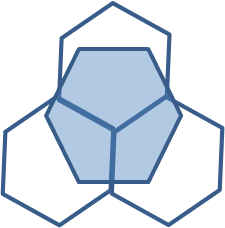
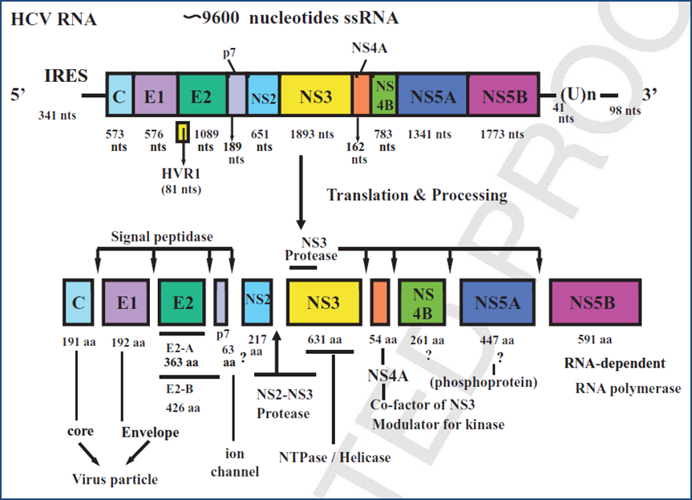

<!DOCTYPE html>

<html xmlns:th="http://www.thymeleaf.org">

<head>
<title>TITLE</title>
<meta charset="utf-8" />
<!-- 
<link rel="stylesheet" type="text/css" href="http://home.hiroshima-u.ac.jp/nhayes/static/ext-4.1.0-beta-1/resources/css/ext-all.css" />
<script src="http://home.hiroshima-u.ac.jp/nhayes/static/ext-4.1.0-beta-1/ext-all-debug.js"></script>
-->

<link rel="stylesheet" type="text/css" href="http://cdn.sencha.io/ext-4.0.7-gpl/resources/css/ext-all.css"/>
<script src="http://cdn.sencha.io/ext-4.0.7-gpl/ext-all-debug.js"></script>

<script src="wro/hcv.js"></script>

<script>
/*<![CDATA[*/

Ext.onReady(function(){
   Ext.direct.Manager.addProvider(Ext.app.REMOTING_API);

});

/*]]>*/
</script>
</head>

<body>

<!-- 

<h1>Hiroshima Hepatitis C Virus Database</h1>
<hr/>
<p>The database will make it easier to analyze associations between substitutions and clinical data (published or user-supplied).</p>


<ul>
<li>statistics</li>
<li>search</li>
<li>news</li>
<li>alignment</li>
<li>resistance</li>
</ul>
 -->
</body>
</html>
